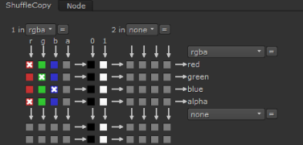

通道矩阵中勾选的框的组合创建输出到右侧顶部下拉菜单中选择的层的通道列表。
这四个通道流作为 二组输出 从节点。它允许您从节点输出另外四个通道，总共八个输出通道，以匹配可能的八个输入通道。
在这种情况下，第二组输出没有被利用。
提示: 虽然不是必需的，但最好使用第一组输出来交换当前数据流中的通道，使用第二组输出来创建新通道。这保护了默认 Rgba 设置从无意的覆盖，并使其他艺术家更容易理解你的脚本的运作。
交换通道的基本过程是首先从 1 在 和 2 在 (或者，在洗牌节点的情况下, 在 1 和 在 2 ) 下拉菜单。然后，从右侧的下拉菜单中选择您的传出层。然后通过单击结果矩阵进行实际的通道交换。
例如，以最简单的情况来看，假设你想复制 红色 通道的 Rgba 设置为其 阿尔法 频道。您可以单击矩阵来创建以下配置。
|
 |
| 配置通道矩阵。 |
你可以看到矩阵利用了 r 频道 (代表 红色 ) 两次。它作为红色通道出现一次，作为红色通道出现另一次 阿尔法 频道。
|
|